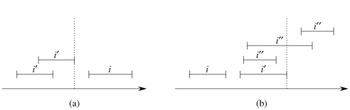

|
|
< Day Day Up > |
|
In this section, we shall augment red-black trees to support operations on dynamic sets of intervals. A closed interval is an ordered pair of real numbers [t1, t2], with t1 ≤ t2. The interval [t1, t2] represents the set {t ∈ R : t1 ≤ t ≤ t2}. Open and half-open intervals omit both or one of the endpoints from the set, respectively. In this section, we shall assume that intervals are closed; extending the results to open and half-open intervals is conceptually straightforward.
Intervals are convenient for representing events that each occupy a continuous period of time. We might, for example, wish to query a database of time intervals to find out what events occurred during a given interval. The data structure in this section provides an efficient means for maintaining such an interval database.
We can represent an interval [t1, t2] as an object i, with fields low[i] = t1 (the low endpoint) and high[i] = t2(the high endpoint). We say that intervals i and i' overlap if i ∩ i' ≠ ø, that is, if low[i] ≤ high[i'] and low[i'] ≤ high[i]. Any two intervals i and i' satisfy the interval trichotomy; that is, exactly one of the following three properties holds:
i and i' overlap,
i is to the left of i' (i.e., high[i]< low[i']),
i is to the right of i' (i.e., high[i']< low[i]).
Figure 14.3 shows the three possibilities.
An interval tree is a red-black tree that maintains a dynamic set of elements, with each element x containing an interval int[x]. Interval trees support the following operations.
INTERVAL-INSERT(T, x) adds the element x, whose int field is assumed to contain an interval, to the interval tree T.
INTERVAL-DELETE(T, x) removes the element x from the interval tree T.
INTERVAL-SEARCH(T, i) returns a pointer to an element x in the interval tree T such that int[x] overlaps interval i, or the sentinel nil[T] if no such element is in the set.
Figure 14.4 shows how an interval tree represents a set of intervals. We shall track the four-step method from Section 14.2 as we review the design of an interval tree and the operations that run on it.
We choose a red-black tree in which each node x contains an interval int[x] and the key of x is the low endpoint, low[int[x]], of the interval. Thus, an inorder tree walk of the data structure lists the intervals in sorted order by low endpoint.
In addition to the intervals themselves, each node x contains a value max[x], which is the maximum value of any interval endpoint stored in the subtree rooted at x.
We must verify that insertion and deletion can be performed in O(lg n) time on an interval tree of n nodes. We can determine max[x] given interval int[x] and the max values of node x's children:
max[x] = max(high[int[x]], max[left[x]], max[right[x]]).
Thus, by Theorem 14.1, insertion and deletion run in O(lg n) time. In fact, updating the max fields after a rotation can be accomplished in O(1) time, as is shown in Exercises 14.2-4 and 14.3-1.
The only new operation we need is INTERVAL-SEARCH(T, i), which finds a node in tree T whose interval overlaps interval i. If there is no interval that overlaps i in the tree, a pointer to the sentinel nil[T] is returned.
INTERVAL-SEARCH(T, i) 1 x ← root[T] 2 while x ≠ nil[T] and i does not overlap int[x] 3 do if left[x] ≠ nil[T] and max[left[x]] ≥ low[i] 4 then x ← left[x] 5 else x ← right[x] 6 return x
The search for an interval that overlaps i starts with x at the root of the tree and proceeds downward. It terminates when either an overlapping interval is found or x points to the sentinel nil[T]. Since each iteration of the basic loop takes O(1) time, and since the height of an n-node red-black tree is O(lg n), the INTERVAL-SEARCH procedure takes O(lg n) time.
Before we see why INTERVAL-SEARCH is correct, let's examine how it works on the interval tree in Figure 14.4. Suppose we wish to find an interval that overlaps the interval i = [22, 25]. We begin with x as the root, which contains [16, 21] and does not overlap i. Since max[left[x]] = 23 is greater than low[i] = 22, the loop continues with x as the left child of the root-the node containing [8, 9], which also does not overlap i. This time, max[left[x]] = 10 is less than low[i] = 22, so the loop continues with the right child of x as the new x. The interval [15, 23] stored in this node overlaps i, so the procedure returns this node.
As an example of an unsuccessful search, suppose we wish to find an interval that overlaps i = [11, 14] in the interval tree of Figure 14.4. We once again begin with x as the root. Since the root's interval [16, 21] does not overlap i, and since max[left[x]] = 23 is greater than low[i] = 11, we go left to the node containing [8, 9]. (Note that no interval in the right subtree overlaps i-we shall see why later.) Interval [8, 9] does not overlap i, and max[left[x]] = 10 is less than low[i] = 11, so we go right. (Note that no interval in the left subtree overlaps i.) Interval [15, 23] does not overlap i, and its left child is nil[T], so we go right, the loop terminates, and the sentinel nil[T] is returned.
To see why INTERVAL-SEARCH is correct, we must understand why it suffices to examine a single path from the root. The basic idea is that at any node x, if int[x] does not overlap i, the search always proceeds in a safe direction: an overlapping interval will definitely be found if there is one in the tree. The following theorem states this property more precisely.
Any execution of INTERVAL-SEARCH(T, i) either returns a node whose interval overlaps i, or it returns nil[T] and the tree T contains no node whose interval overlaps i.
Proof The while loop of lines 2-5 terminates either when x = nil[T] or i overlaps int[x]. In the latter case, it is certainly correct to return x. Therefore, we focus on the former case, in which the while loop terminates because x = nil[T].
We use the following invariant for the while loop of lines 2-5:
If tree T contains an interval that overlaps i, then there is such an interval in the subtree rooted at x.
We use this loop invariant as follows:
Initialization: Prior to the first iteration, line 1 sets x to be the root of T , so that the invariant holds.
Maintenance: In each iteration of the while loop, either line 4 or line 5 is executed. We shall show that the loop invariant is maintained in either case.
If line 5 is executed, then because of the branch condition in line 3, we have left[x] = nil[T], or max[left[x]]< low[i]. If left[x] = nil[T], the subtree rooted at left[x] clearly contains no interval that overlaps i, and so setting x to right[x] maintains the invariant. Suppose, therefore, that left[x] ≠ nil[T] and max[left[x]]< low[i]. As Figure 14.5(a) shows, for each interval i' in x's left subtree, we have
|
high[i'] |
≤ |
max[left[x]] |
|
< |
low[i]. |

Figure 14.5: Intervals in the proof of Theorem 14.2. The value of max[left[x]] is shown in each case as a dashed line. (a) The search goes right. No interval i' in x's left subtree can overlap i. (b) The search goes left. The left subtree of x contains an interval that overlaps i (situation not shown), or there is an interval i' in x's left subtree such that high[i'] = max[left[x]]. Since i does not overlap i', neither does it overlap any interval i" in x's right subtree, since low[i'] ≤ low[i"].
By the interval trichotomy, therefore, i' and i do not overlap. Thus, the left subtree of x contains no intervals that overlap i, so that setting x to right[x] maintains the invariant.
If, on the other hand, line 4 is executed, then we will show that the contrapositive of the loop invariant holds. That is, if there is no interval overlapping i in the subtree rooted at left[x], then there is no interval overlapping i anywhere in the tree. Since line 4 is executed, then because of the branch condition in line 3, we have max[left[x]] ≥ low[i]. Moreover, by definition of the max field, there must be some interval i' in x's left subtree such that
|
high[i'] |
= |
max[left[x]] |
|
≥ |
low[i]. |
(Figure 14.5(b) illustrates the situation.) Since i and i' do not overlap, and since it is not true that high[i']< low[i], it follows by the interval trichotomy that high[i]< low[i']. Interval trees are keyed on the low endpoints of intervals, and thus the search-tree property implies that for any interval i" in x's right subtree,
|
high[i] |
< |
low[i'] |
|
≤ |
low[i"]. |
By the interval trichotomy, i and i" do not overlap. We conclude that whether or not any interval in x's left subtree overlaps i, setting x to left[x] maintains the invariant.
Termination: If the loop terminates when x = nil[T], there is no interval overlapping i in the subtree rooted at x. The contrapositive of the loop invariant implies that T contains no interval that overlaps i. Hence it is correct to return x = nil[T].
Thus, the INTERVAL-SEARCH procedure works correctly.
Write pseudocode for LEFT-ROTATE that operates on nodes in an interval tree and updates the max fields in O(1) time.
Rewrite the code for INTERVAL-SEARCH so that it works properly when all intervals are assumed to be open.
Describe an efficient algorithm that, given an interval i, returns an interval overlapping i that has the minimum low endpoint, or nil[T] if no such interval exists.
Given an interval tree T and an interval i, describe how all intervals in T that overlap i can be listed in O(min(n, k lg n)) time, where k is the number of intervals in the output list. (Optional: Find a solution that does not modify the tree.)
Suggest modifications to the interval-tree procedures to support the new operation INTERVAL-SEARCH-EXACTLY(T, i), which returns a pointer to a node x in interval tree T such that low[int[x]] = low[i] and high[int[x]] = high[i], or nil[T] if T contains no such node. All operations, including INTERVAL-SEARCH-EXACTLY, should run in O(lg n) time on an n-node tree.
Show how to maintain a dynamic set Q of numbers that supports the operation MIN-GAP, which gives the magnitude of the difference of the two closest numbers in Q. For example, if Q = {1, 5, 9, 15, 18, 22}, then MIN-GAP(Q) returns 18 - 15 = 3, since 15 and 18 are the two closest numbers in Q. Make the operations INSERT, DELETE, SEARCH, and MIN-GAP as efficient as possible, and analyze their running times.
VLSI databases commonly represent an integrated circuit as a list of rectangles. Assume that each rectangle is rectilinearly oriented (sides parallel to the x- and y-axis), so that a representation of a rectangle consists of its minimum and maximum x- and y-coordinates. Give an O(n lg n)-time algorithm to decide whether or not a set of rectangles so represented contains two rectangles that overlap. Your algorithm need not report all intersecting pairs, but it must report that an overlap exists if one rectangle entirely covers another, even if the boundary lines do not intersect. (Hint: Move a "sweep" line across the set of rectangles.)
Suppose that we wish to keep track of a point of maximum overlap in a set of intervals-a point that has the largest number of intervals in the database overlapping it.
Show that there will always be a point of maximum overlap which is an endpoint of one of the segments.
Design a data structure that efficiently supports the operations INTERVAL-INSERT, INTERVAL-DELETE, and FIND-POM, which returns a point of maximum overlap. (Hint: Keep a red-black tree of all the endpoints. Associate a value of +1 with each left endpoint, and associate a value of -1 with each right endpoint. Augment each node of the tree with some extra information to maintain the point of maximum overlap.)
The Josephus problem is defined as follows. Suppose that n people are arranged in a circle and that we are given a positive integer m ≤ n. Beginning with a designated first person, we proceed around the circle, removing every mth person. After each person is removed, counting continues around the circle that remains. This process continues until all n people have been removed. The order in which the people are removed from the circle defines the (n, m)-Josephus permutation of the integers 1, 2,..., n. For example, the (7, 3)-Josephus permutation is 〈3, 6, 2, 7, 5, 1, 4〉.
Suppose that m is a constant. Describe an O(n)-time algorithm that, given an integer n, outputs the (n, m)-Josephus permutation.
Suppose that m is not a constant. Describe an O(n lg n)-time algorithm that, given integers n and m, outputs the (n, m)-Josephus permutation.
|
|
< Day Day Up > |
|